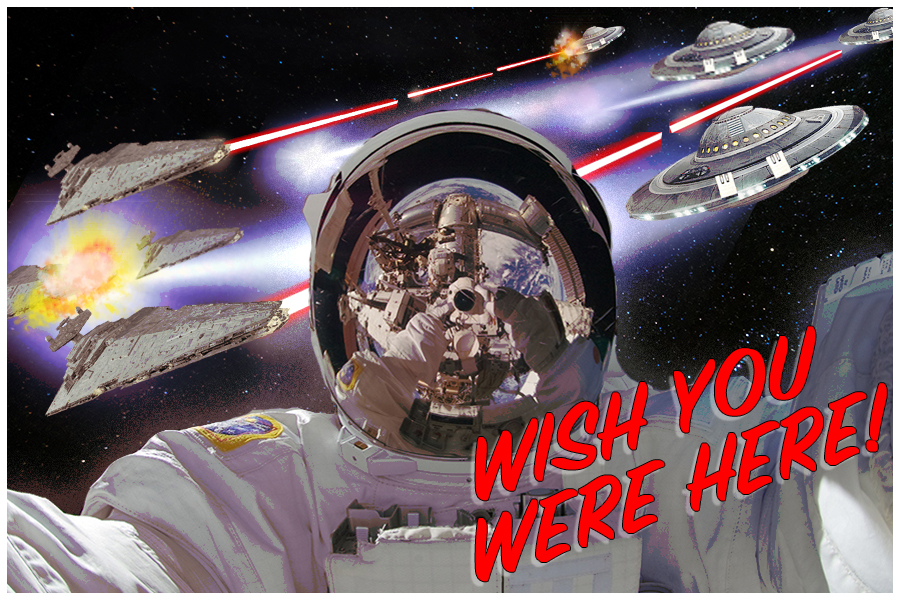

The raster project was a lot of fun for me.
As a veteran of Adobe Photoshop, it was a nice opportunity to flex my abilities. I knew a lot of the
techniques going into the project, but just like a muscle,
Photoshop skills are use-it-or-lose-it. It was nice to get a short refresher.
I was inspired by the idea of an astronaut in space and all the wild things they must see. I liked the idea of a lone astronaut in space writing to a loved one as a juxtaposition to the things astronauts must see on a daily basis.
Kelsey also makes videos and takes photographs.